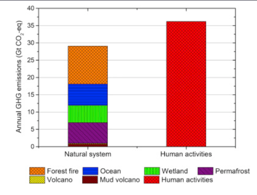
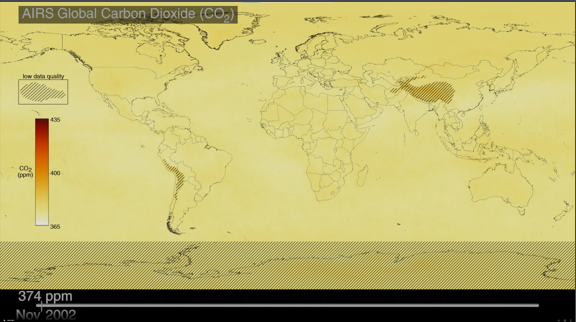

Main Study
Climate change is influenced by both human-caused and natural emissions. In this section, we explore key drivers of greenhouse gas emissions and how advanced technologies, such as satellite observations and atmospheric modeling, allow us to understand their global impact.
Human-Caused Greenhouse Gas Emissions
- Fossil Fuel Combustion: The largest contributor to human-caused emissions, mainly from electricity, transportation, and industry.
- Agriculture: Livestock farming and agricultural practices release significant methane and nitrous oxide.
- Deforestation: Clearing forests reduces carbon sinks and releases carbon dioxide into the atmosphere.
- Industrial Processes: Manufacturing, chemical production, and other industries emit a range of greenhouse gases.

Natural Sources of Greenhouse Gases
- Volcanic Activity: Volcanoes release significant amounts of carbon dioxide and sulfur dioxide.
- Ocean Absorption: Oceans absorb atmospheric carbon dioxide, though increased acidity is affecting marine life.
- Decomposition: Decomposing organic matter releases methane, a potent greenhouse gas.
Satellite and Model-Based Data
We utilize satellite observations and atmospheric models to track and predict greenhouse gas flows. By combining these datasets, we can better understand the sources, sinks, and transport of emissions.

Visualizing emissions data from satellite and model-based datasets helps us identify global emission hotspots, track greenhouse gas transport across borders, and provide crucial insights for international climate policy.